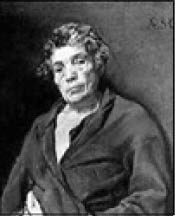

Aisopos, Ressam Diego Velâzquez, 1639
Aisopos (Ezop, MÖ 620-560)
“ilk gördüğümüz zaman korktuğumuz nice şeyler vardır ki zamanla alışır, hiç aldırmaz oluruz.”
Frigyalı olan Aisopos, eskiden Amorium olarak bilinen bir kasabada dünyaya geldi. (Bu kasabanın kalıntıları Afyon Emirdağ Aziziye Kasabası, Hisar Köyü yakınlarındadır.)
Fabl adı verilen, kahramanları hayvanlardan oluşan, toplum yaşamı ve insan ilişkilerini eğlenceli bir dille anlatan ilk manzum öykülerin sahibi olan Aisopos yaşamına kölelikle başladı.
17. yüzyıl Fransız edebiyatının ünlü ismi Jean de La Fontaine, fabl türünün ustası Aisopos hakkında, Bizanslı keşiş ve bilgin Planudes’ten aktarılan bilgiler ışığında şöyle yazar:
“Doğaya teşekkür mü borçluydu yoksa şikâyetçi mi olmalıydı, söylemesi zor, onu çok parlak bir zihinle donatan doğa, biçimsiz bir beden ve çirkin bir yüzle getirmişti dünyaya, pek insana benzer bir yanı yoktu ve neredeyse bütünüyle konuşma özürlüydü. Bu kusurlarla, doğuştan olmasa bile kısa zamanda köle olması kaçınılmazdı. Ancak ruhu, başına ne gelirse gelsin, her zaman özgür kaldı.”
Aisopos, çirkin ve kekeme olmasından dolayı çevresinin hor davranışlarını, zekâsını olağanüstü kullanarak alt etmeyi başarıyordu. Bir gün efendisinin eve gönderdiği taze incirleri diğer hizmetkârlar yemiş ve kendisini savu-namayacağı düşüncesiyle suçu Aisopos’un üzerine atmıştı. Suç işleyen köleleri acımasızca cezalandıran efendiler döneminde bu ağır bir suçtu. Aisopos kendisini savunmak yerine cezasının sadece birkaç dakika ertelenmesini istedi. Bu isteği kabul edilince koşarak ılık bir kap su getirdi ve içtikten sonra midesindekileri çıkarmak için parmağını boğazına götürdü. Ancak midesinden içtiği sudan başka hiçbir şey çıkmadı. Kekeme olduğundan dolayı anlata-mamak, dinlenmemek gibi riskler yerine direkt ispatı seçmişti. Sonra eliyle diğer hizmetkârları işaret ederek onların da aynısını yapmalarını diledi efendisinden. Herkes şaşırmış ve biraz sonra incirleri kimlerin yediği ortaya çıkmıştı.
Köle ticaretinden dolayı Aisopos’un da içinde bulunduğu köleler başka bir şehre götürülüyorlardı. Kervanda bulunan diğer köleler, boyu kısa ve çelimsiz olduğundan Aisopos’a yük vermek istemediler. Ancak o bunu kabul etmeyince istediği yükü seçme hakkını tanıdılar. O da gidip ekmek sepetinin olduğu yükü kavradı. Diğer köleler ağır bir yük seçtiğini söyledilerse de o dinlemedi. Fakat doğru karar verdiğini birkaç gün sonra anladılar. Her öğünde yenen ekmekler giderek azalmaya ve yük hafiflemeye başlamıştı. Bu seçim diğer kölelerde hayranlık uyandırmıştı.
Aisopos zekâsını yalnız kendisi için değil, kölelik ettiği efendilerinin de yararına kullanıyordu. Her seferinde özgürlüğünü istiyordu, ama köle sahipleri önce söz verseler de sonrasında buna yanaşmıyorlardı. Aisopos’un efendisi Xantus, yakınlarıyla birlikte bir gün fazlasıyla içki içmişti. Sarhoş olan efendi, çevresiyle iddiaya tutuştu. Yakınlarında bulunan denizin tamamını içebileceğini söyledi, söylemekle de kalmayıp evi ve itibarı üzerine bahse girdi. Ertesi gün ayıldığında yaptığı hatadan dolayı başını duvarlara vuran efendinin imdadına kölesi Aisopos yetişti ve gereken çıkış yolunu gösterdi.
Ağızdan ağza yayılan bu iddia tüm halkın meraklı bakışlarıyla deniz kenarında toplanmasına yol açmıştı. Karşı taraftakiler ise bahsi kazandıkları düşüncesiyle eğlenceye başlamışlardı bile. Yanında Aisopos’la birlikte gelen Xantus, bahse girdiği kişilere tüm halkın huzurunda seslendi:
“Baylar, tüm denizi içeceğimi söyledim ve evim üzerine bahse girdim. Bu iddiamda kararlıyım, yalnız denizi içebileceğimi söyledim, ona dökülen ırmakları değil. Bu sebeple siz bu ırmakların yönünü değiştirin, ben de bahse girdiğim gibi denizi içeyim...” Bu cevap efendisine daha da itibar sağladı, ancak kendisine özgürlüğü getirmedi.
Xantus bir gün kölesini bir yere göndermişti. Yolda yargıç nereye gittiğini sordu. Efkârlı olan Aisopos:
“Bir yere gittiğim kesin, fakat hayat beni nereye götürür bilemiyorum” diye cevap verdi. Bu cevaba sinirlenen yargıç nereye gittiğini bilmeyen bu adamın hemen yakalanıp hapse atılması emrini verdi. Bunun üzerine Aisopos,
“Ben size söylemiştim nereye gittiğimi bilmediğimi. Hapse gideceğimi nerden bilebilirdim ki?” Bu sözleri mantıklı bulan yargıç kölenin bırakılmasını emretti ve kafasını sallayarak yoluna devam etti.
Zekâsıyla şehrini istiladan kurtaran Aisopos, nihayet özgürlüğünü elde etmişti. O dönemlerde ülke kralları birbirlerine karşılığı yüklü paralar olmak üzere, bilmeceler gönderiyorlardı. Aisopos’un keskin zekâsını işiten Babil Kralı Lycerus, onu yanına alarak önemli ölçüde kazanç ve şöhret elde etmişti.
Aisopos’un bir süre sonra seyahat etme isteği iyice ağır basmıştı. Yunanistan’a doğru yola çıktığında konakladığı şehirlerin birinde uğradığı bir iftira sonucu uçuruma atılma cezası alan bu farklı adamın yaşamına son verildi.
Aisopos’tan...Tilki ile Oduncu
Tilkinin biri, arkasına düşen avcılardan kurtulayım derken karşısına bir oduncu çıkmış:
“Bir yer göster de saklanayım!” diye ona yalvarmış.
Oduncu “Benim kulübeye gir, orada görmezler seni” demiş.
Az sonra avcılar gelmiş, oduncuya:
“Buralarda bir tilki görmedin mi?” diye sormuşlar.
Oduncu ağzı ile “Görmedim!” demiş, ama bir yandan da eliyle işaret edip hayvanın nereye saklandığını göstermiş. Avcılar oduncunun dediğini duymuş, eline bakmamışlar. Tilki onların geçip gittiğini görünce saklandığı yerden çıkmış, hiçbir şey söylemeden uzaklaşmak istemiş.
Oduncu şaşırmış:
“Nasıl oluyor! Sana iyilik ettim, canını kurtardım, sen bana bir teşekkür bile etmiyorsun!” diye siteme başlamış.
Bunun üzerine tilki “Ben sana teşekkür ederdim, ederdim ama dilinle elin birbirine uymadı ki!” demiş.
Saka Kuşu ile Yarasa
Bir saka kuşunu kafese koyup pencereye asmışlar. Bu kuş geceleyin öter dururmuş. Yarasanın biri ta uzaktan duymuş sesini, yaklaşıp sormuş:
“Neden gündüz susuyorsun da böyle geceleyin ötüyorsun?”
Saka kuşu:
“Sebebi var da ondan, gündüz ötüyordum, gelip beni yakaladılar, o günden sonra tedbiri elden bırakmıyorum, gece ötüyorum” demiş.
Yarasa gülmüş, “Şimdi tedbirli olmuşsun kaç para eder? Sen asıl tutulup kafese konmadan önce uygulamalıydın o tedbiri!” demiş.
Okla Vurulmuş Kartal
Bir kayaya konan kartal tavşanları gözetliyormuş. Bunu gören bir avcı okunu attığı gibi kartalı tam kalbinden vurmuş. Kartal onu vuran okun kanatlarının yine kendi tüyünden olduğunu görünce iyice yıkılmış, “Öldüğüme yanmam, beni kendi tüyümle öldürdüler, ona yanarım” demiş.